ggmira draws multilayer networks in MiRA, the browser-based multilayer
network visualizer, and describes how they should look with code, the
way ggplot2 does: start from the network with mira() and
add components with +, one per part of the
plot. Printing the plot opens it in the browser with the settings
applied; everything can still be changed in MiRA’s interface.
This article builds one plot up, a component at a time, on emln network 17: four layers (pollination and seed dispersal on two Galápagos islands), two node sets (birds and plants), and interlayer links between layers 1–2 and 3–4. The screenshots show what each step looks like when it opens.
MiRA is best viewed on a large screen. It needs a window of at least 1024 x 600 pixels; in a smaller one, MiRA warns that buttons and panels may be cut off. Plots also need an internet connection: MiRA loads its drawing libraries and map tiles from the web.
Each plot starts a small local server; stop them all with
httpuv::stopAllServers().
emln has a plot_multilayer() of its own, and with emln
attached after ggmira that is the one R finds. Use ggmira’s
plot_mira(), or write
ggmira::plot_multilayer().
In RStudio
Plots open in the browser. In RStudio they can open in the Viewer
pane instead: print(p, viewer = TRUE) for one plot, or
options(ggmira.viewer = TRUE) for every plot (put it in
your .Rprofile to keep it). Give the pane room: drag it
wider, maximize it, or click its Show in new window button to
move the plot to the browser. The home page has a screenshot.
1. The plot
mira() starts the plot. Printing it (typing its name)
opens the network with MiRA’s default view: a bipartite layout, nodes
colored by set.
p <- mira(net, bipartite = TRUE, setA_type = "bird")
p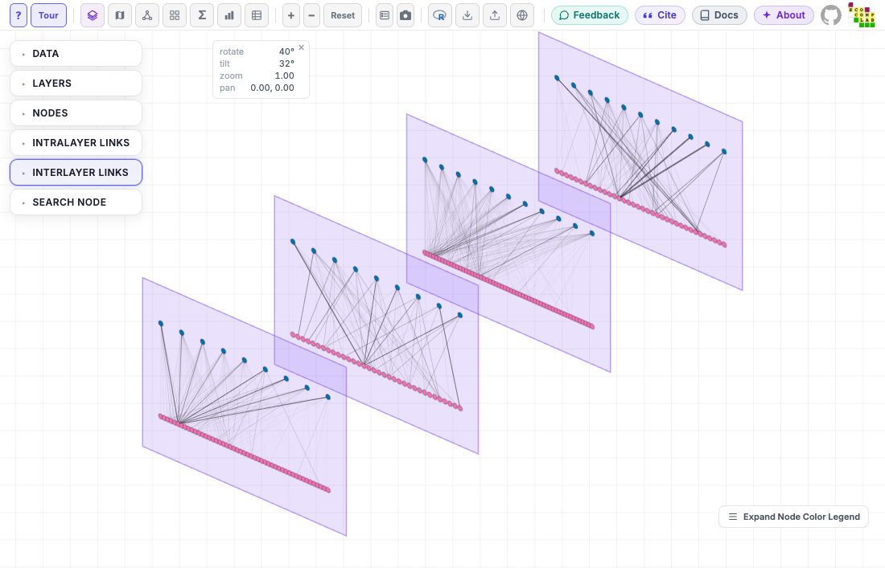
What the network offers
Before adding components, see what the network offers.
mira_options() lists what each component’s arguments can
take: the columns and the attributes MiRA computes, the scale type MiRA
gives each (*: color_scale can switch it) and
its values. On a bipartite network where the two node sets have
different attributes, it also shows which sets have each. Give it the
same arguments as mira():
opts <- mira_options(net, bipartite = TRUE, setA_type = "bird")
opts[opts$component == "mira_node", ]
#> mira_node()
#> color_by node_type categorical node 2 values: bird, plant
#> taxa_verified categorical node 2 values: FALSE, TRUE
#> verification_level categorical node 3 values: family, genus, ...
#> type categorical state node 2 values: bird, plant
#> (computed) continuous* computed 12 attributes, e.g. intra...
#> .set set keyword one color per set: plant,...
#> size_by (computed) continuous computed 12 attributes, e.g. intra...
#> * MiRA's default scale; color_scale can choose the other (see ?mira_scales)
#> nodesThe whole table also covers the links, the layers, the columns
mira_filter() and mira_mode_meta(layers = )
conditions can use, and the meta-network’s measures.
The computed attributes are each node’s degree (its number of links)
and strength (the sum of their weights), within layers
(intra_) and between them (inter_): per layer
(intra_degree), and summed or averaged over a node’s layers
(intra_degree_sum, intra_degree_mean). On a
directed network the names carry the direction:
intra_in_degree, intra_out_degree.
?mira_node has the full list.
2. Layout: where the nodes go
mira_layout() chooses the layout algorithm; a
seed makes the positions reproducible (without one, most
layouts start from random positions and differ each time the plot
opens). Adding a component to p gives a new plot, so you
can keep the result (p <- p + ...) or just look at it
(p + ...).
p <- p + mira_layout("kamada_kawai", seed = 42)
p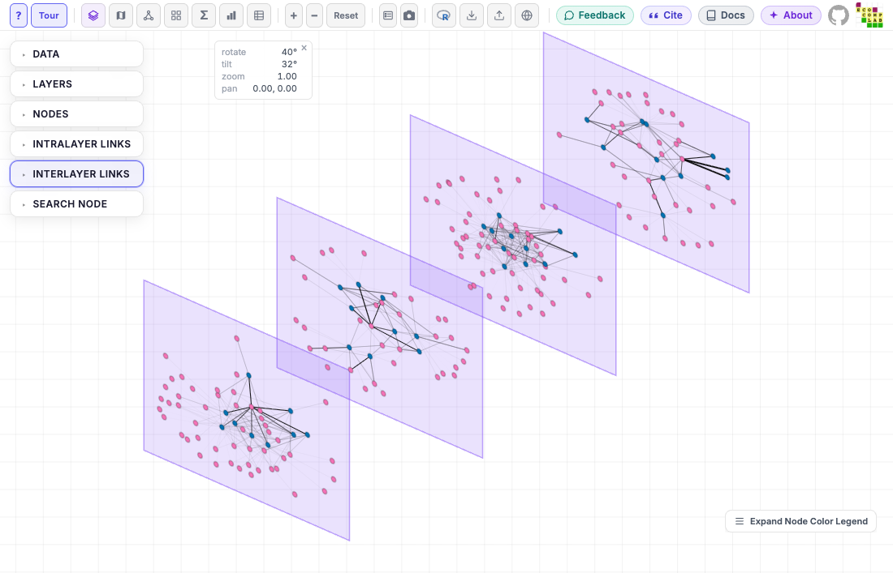
3. Nodes
In every element component, color_by and
size_by map an attribute of the data: a column of the
network’s tables, or one MiRA computes, such as
intra_degree_sum. color, size and
shape set constants. Here nodes are colored by their
taxonomic verification level, with two levels given colors by hand
(color_values; the third keeps MiRA’s palette), and sized
by degree. size is the base size, from 3 to 25 (MiRA’s
default is 10); node names, with labels = TRUE, have
label_size 8 to 24 (default 12).
p <- p + mira_node(
color_by = "verification_level",
color_values = c(genus = "red", species = "#1f77b4"),
size_by = "intra_degree_sum", size = 8
)
p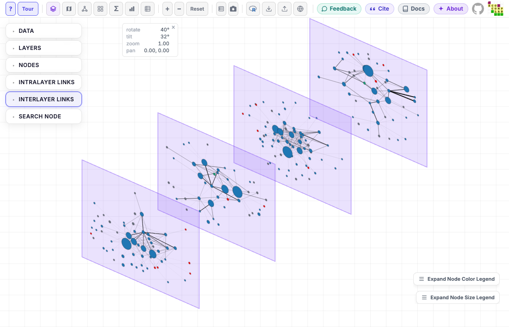
On a bipartite network, color_by, size_by
and shape also take one value per node set, named by
node_type:
color_by = c(bird = "intra_degree_sum", plant = NA) colors
birds by degree and leaves plants in MiRA’s default (see
?mira_node). Shapes are "circle",
"square", "triangle" and
"diamond", all with the same area so sizes stay comparable:
shape = c(bird = "triangle", plant = "circle").
4. Links
mira_intralayer() styles the links within layers: here
colored by the link column type, with the weakest links
hidden. mira_interlayer() styles the links between layers;
MiRA hides them by default, so its other arguments show nothing without
show = TRUE or pairs, which shows only the
links between some layers (and turns them on).
p <- p +
mira_intralayer(color_by = "type", min_weight = 0.01) +
mira_interlayer(color = "grey40", curvature = 0.8, min_weight = 0.5,
pairs = list(c("layer_1", "layer_2"), c("layer_3", "layer_4")))
p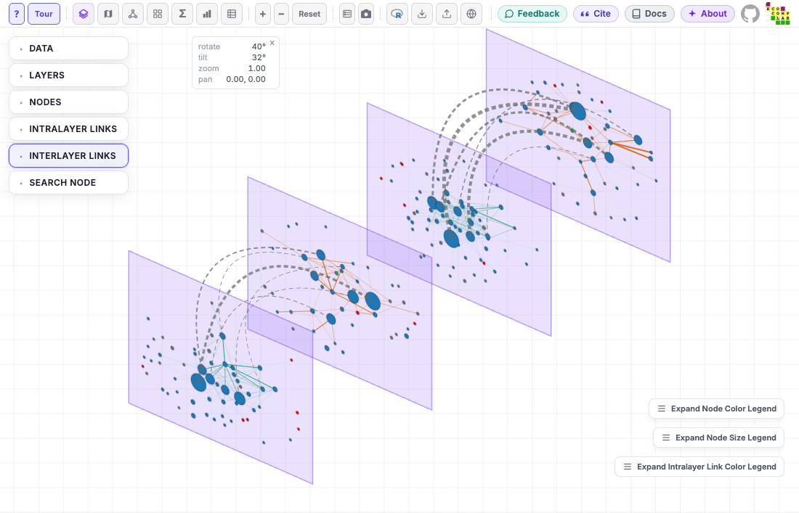
5. Layers
mira_layer() colors the layers (by a layer column, or
one color per layer with color_by = "layer_name"), shows
their names (label_size 8 to 32; MiRA’s default is 14), and
arranges them: stack and spacing.
p <- p + mira_layer(
color_by = "layer_name",
color_values = c(layer_1 = "orange", layer_3 = "#9467bd"),
labels = TRUE, label_size = 18,
stack = "vertical", spacing = 250
)
p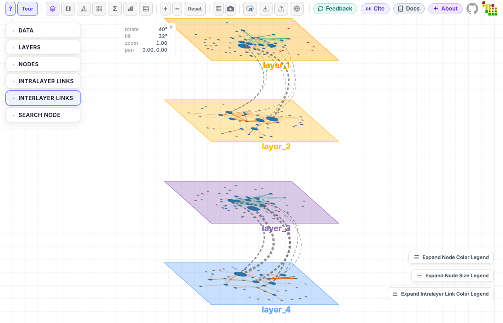
6. Filter: draw part of the network
mira_filter() keeps some nodes, links or layers, with a
condition on the columns of the network’s tables, as in
subset(): nodes on net$nodes,
links on net$extended, layers on
net$layers. Here, all plants and two finches; a hidden node
hides its links. MiRA shows “Data filter active”, with a button to
remove the filter. Conditions use the columns as they are named in the
tables: the node sets of this network are in type, which
MiRA (and mira_options()) calls node_type.
p + mira_filter(nodes = type == "plant" |
node_name %in% c("Geospiza_fuliginosa", "Geospiza_fortis"))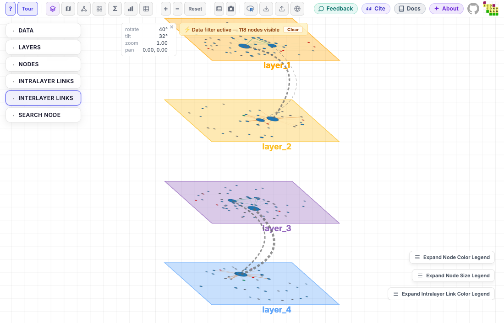
layers keeps whole layers, by name or by a condition;
the layers it keeps close up the stack. Here, the two layers north of
latitude -0.6:
p + mira_filter(layers = latitude > -0.6)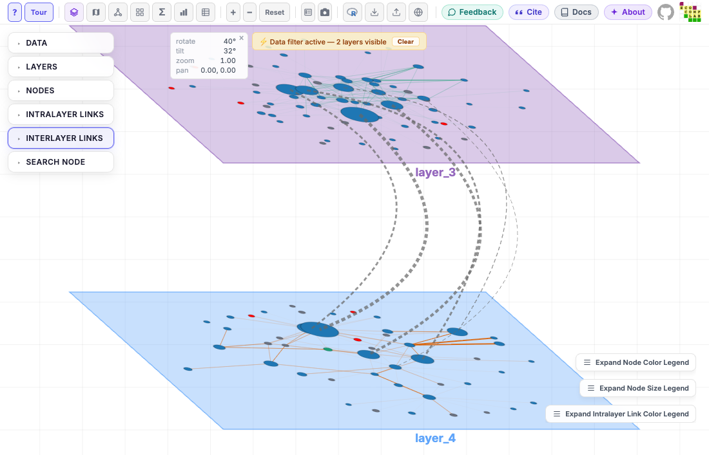
7. Camera, legends and a highlighted node
Legends start minimized; mira_legends() opens them, all
or some, and position moves them (alone, it also opens them
all). mira_camera() turns, tilts, zooms and pans the view;
to find the values, move the view with the mouse in MiRA and copy the
code with MiRA’s R button (step 10).
mira_node(highlight = ) makes a node and its neighbors
stand out, as when it is picked in MiRA’s Search Node. In MiRA, all of
this can still be changed with the mouse.
The camera is relative to the browser window: the same call gives the same framing in a larger or smaller window (another screen or computer), but not identical pixels, so use the same window size when figures must match. Layers dragged one by one (Cmd/Ctrl+drag) are not part of the camera.
p + mira_legends(show = c("node_color", "layer_color"), position = "top-right") +
mira_camera(rotate = 60, tilt = 25) +
mira_node(highlight = "Geospiza_fortis")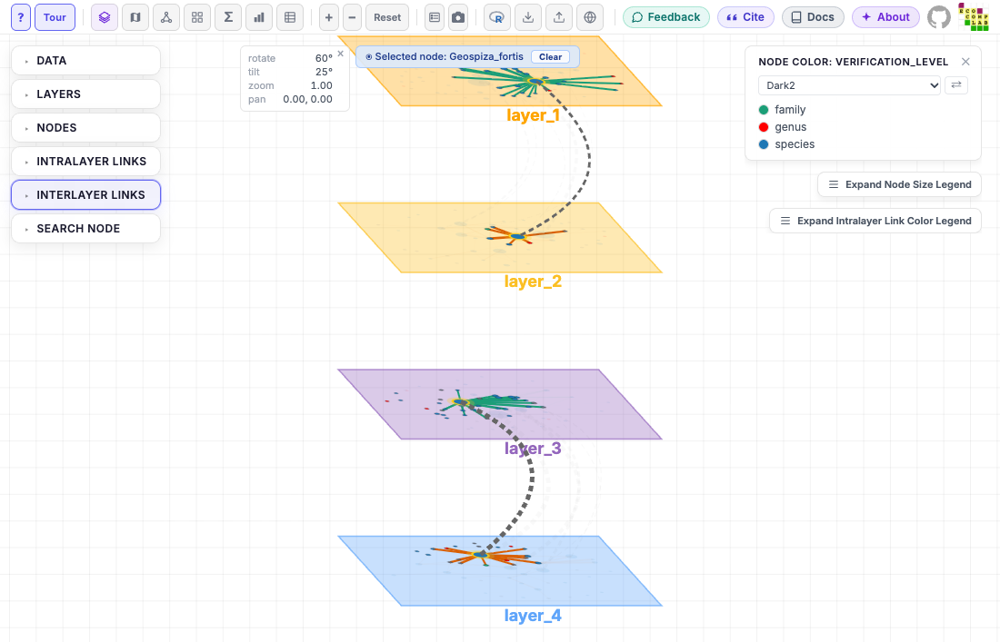
8. Views: MiRA’s modes
MiRA shows a network in several views, which MiRA calls
modes. A mira_mode_*() component opens the plot in
one of them; the other components still apply where MiRA uses them.
mira_mode_grid() puts the layers side by side, with the
node, link and layer settings of the plot:
p + mira_mode_grid(columns = 2)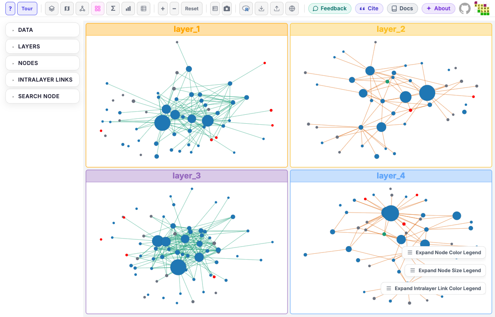
mira_mode_meta() opens the meta-network, each node once
with its links from all layers combined; here, link weights summed over
layers and nodes colored by the number of layers they are in:
p + mira_mode_meta(aggregation = "weights", color_by = "participation")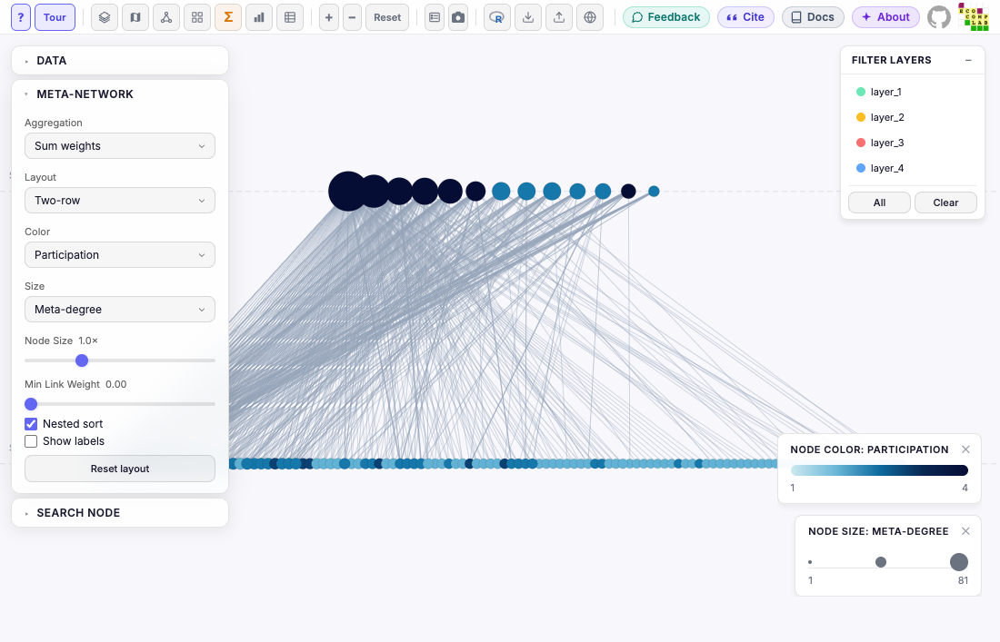
Node shapes set with mira_node(shape = ) carry over to
the meta-network, with a shape legend when birds and plants have
different shapes.
layers selects layers in the meta-network’s Filter
Layers panel: the nodes and links of the other layers are dimmed.
It takes layer names or a condition on the columns of
net$layers, like mira_filter(); here, the two
layers north of latitude -0.6:
p + mira_mode_meta(layers = latitude > -0.6)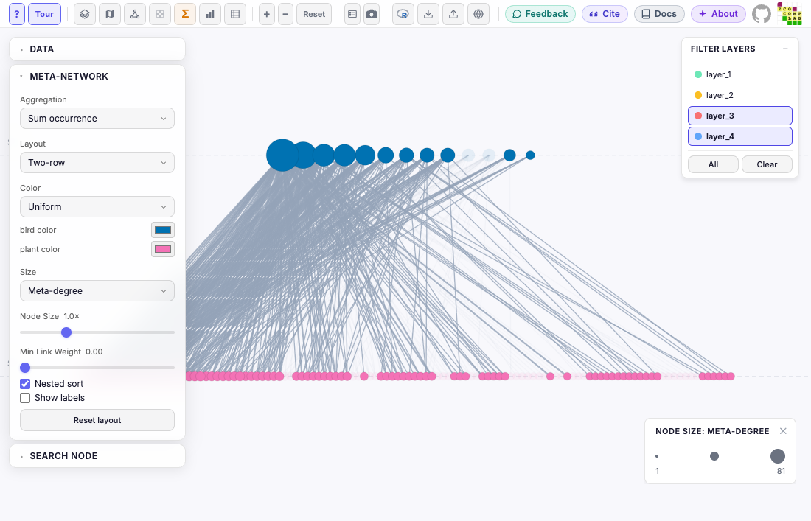
mira_mode_map(), mira_mode_layer(),
mira_mode_dashboard() and mira_mode_data()
open the other views with MiRA’s defaults. A few rules:
- A plot opens in one view. Adding a second
mira_mode_*()of another view replaces the first, with a warning; to see two views, make two plots. -
mira_camera()works in the network view only, andmira_filter()in the network, grid and map views; the layer view applies itslayersonly. R warns when either is combined with a view that does not use it. The meta-network shows the whole network; to dim layers in it, usemira_mode_meta(layers = ). - The map needs
latitudeandlongitudeinnet$layers. - The layer view and the meta-network have their own legends, which
start open;
mira_legends(position = )andshow = FALSEapply to them. -
?mira_modehas a table of what applies in each view. -
plot_mira(net, mode = "meta")opens a network in any view with no components, with MiRA’s defaults.
The same plot in one expression, as in ggplot2:
mira(net, bipartite = TRUE, setA_type = "bird") +
mira_layout("kamada_kawai", seed = 42) +
mira_node(color_by = "verification_level",
color_values = c(genus = "red", species = "#1f77b4"),
size_by = "intra_degree_sum", size = 8) +
mira_intralayer(color_by = "type", min_weight = 0.01) +
mira_interlayer(color = "grey40", curvature = 0.8, min_weight = 0.5,
pairs = list(c("layer_1", "layer_2"), c("layer_3", "layer_4"))) +
mira_layer(color_by = "layer_name",
color_values = c(layer_1 = "orange", layer_3 = "#9467bd"),
labels = TRUE, label_size = 18,
stack = "vertical", spacing = 250)Anything not set keeps MiRA’s default. When a setting is given twice,
the later component wins, so
p + mira_node(color = "grey50") recolors the nodes of
p and keeps everything else.
9. Save the plot to a file
mira_save() draws the plot in MiRA without opening a
window and saves MiRA’s own export: the picture of the camera button,
with the legends and the “Visualized with MiRA” mark. It works in
scripts and R Markdown, where printing a plot does nothing. It needs the
chromote package and Google Chrome (or Chromium, or Edge).
mira_save(p, "network.png") # PNG, at high resolution (2)
mira_save(p, "network.pdf") # the format from the extension
mira_save(p, "network", format = "jpg", resolution = 4,
width = 1600, height = 1000) # 6400 x 4000 pixels
mira_save(p, "clear.png", background = "transparent", legends = FALSE)width and height are the size of MiRA’s
window (the plot is fitted to it, as in the browser); the image is
resolution times that. background is
"grid" (MiRA’s grid, or the map in map view),
"white" or "transparent" (PNG only; not for
the meta-network or the dashboard). A map is saved only with
"grid". Each view can be saved except the data view, a
table. The file’s folder must exist, and an existing file is replaced. A
warning from mira_save() that starts with “MiRA:” is MiRA’s
own: a setting it could not use, or links it does not draw.
In the saved file, links are opaque and at least one pixel wide, so a
dense network looks heavier at resolution = 1 than at 4,
and heavier than on screen.
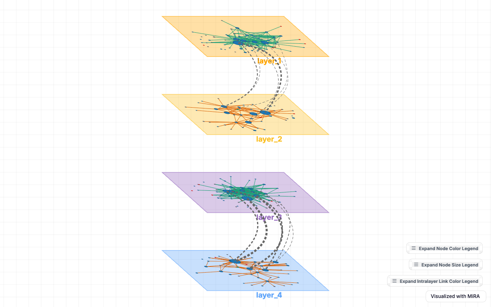
10. Copy the view back as R code
A plot opened from R can still be changed in MiRA: colors, sizes, the
camera, the view. MiRA’s R button, next to Save
Session, shows the ggmira code that draws the current view, changes
included, with a Copy button: paste it into your script to keep
the view. Each element’s component is colored as in
mira_options(), and the code starts with your
mira() call. With Open in RStudio’s Viewer pane
ticked (the default), the code keeps the plot in p and ends
with print(p, viewer = TRUE); untick it for code that opens
the plot in the browser.
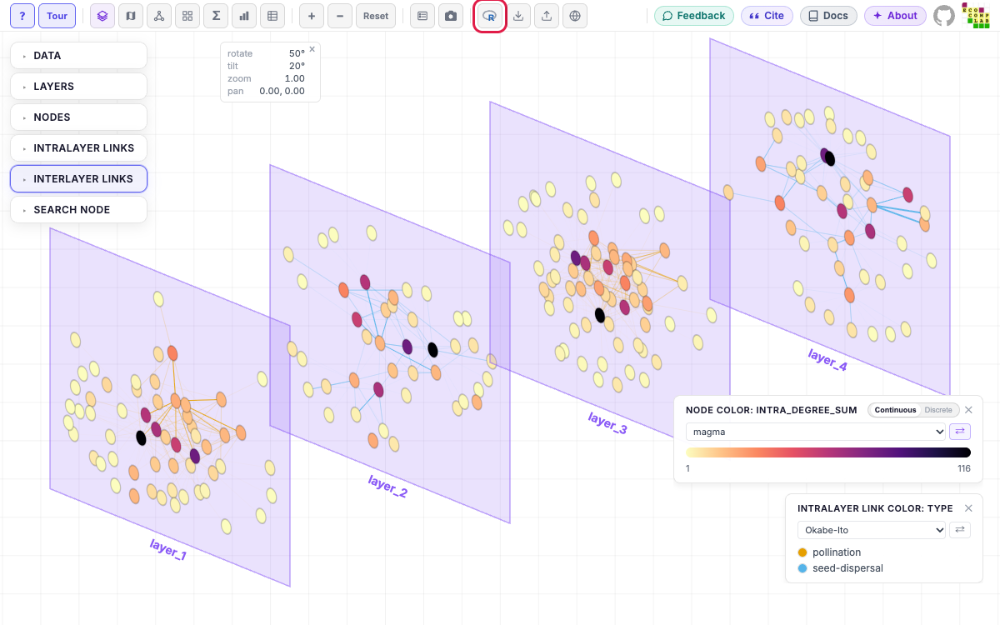
You can also start in MiRA: plot_mira(net) opens the
network with MiRA’s defaults; adjust it with the mouse, and the R button
gives the mira() code for what you made.
plot_mira(net, bipartite = TRUE, setA_type = "bird") # adjust in MiRA, then click ROnly settings that differ from MiRA’s default view are written. What
R cannot set (a layer moved with Cmd/Ctrl+drag or in the layer view,
legends dragged away from a corner, the map’s and the layer view’s own
settings) is listed in comments under the code. A layout recomputed in
MiRA has no seed: add seed = to mira_layout()
for the same layout on every run.
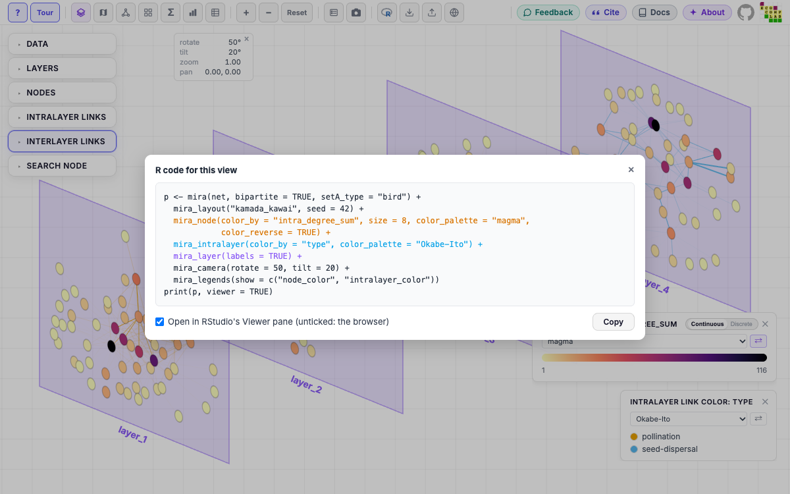
Scales: how values become colors
In every component, color_by chooses what is colored;
five arguments in the same component choose the colors
(?mira_scales): color_scale,
color_values, color_palette,
color_reverse and color_limits.
-
color_scale = "categorical"gives each value its own color;"continuous"a gradient (numeric columns only). Without it, MiRA decides from the data: text is categorical, and numbers with more than two values are continuous, unless their name marks groups (module,cluster).mira_options()shows MiRA’s choice. -
color_valuessets the colors of some values, named by value (numbers need quotes:c("1" = "red")). Values not listed keep MiRA’s palette. -
color_palettechooses the palette ("Okabe-Ito","magma", …),color_reverse = TRUEreverses it, andcolor_limits = c(min, max)fixes the ends of a gradient. - MiRA keeps one scale per attribute name, so components that color by the same attribute share its colors.
- On a bipartite network,
mira_node()takes all five per node set, likecolor_by.
Here the two node sets get different scales. The network’s links run
from plant to bird, so with directed = TRUE birds have
in-degrees and in-strengths, which MiRA computes.
p2 <- mira(net, bipartite = TRUE, setA_type = "bird", directed = TRUE) +
mira_layout("kamada_kawai", seed = 3) +
mira_node(
color_by = c(bird = "intra_in_strength", plant = "verification_level"),
# birds: in-strength is numeric, so a gradient
# plants: categorical, two levels with manual colors
color_values = list(plant = c(species = "#1f77b4", genus = "#ff7f0e")),
# birds sized by in-degree; plants keep the default size
size_by = c(bird = "intra_in_degree", plant = NA),
perspective = FALSE
) +
# links colored by "type" both here and in mira_interlayer(): one shared
# scale; the two components name different values, so their colors merge
mira_intralayer(color_by = "type", color_values = c(pollination = "#d62728"),
arrow_size = 0.5) +
mira_interlayer(show = TRUE, color_by = "type",
color_values = c(interlayer = "black"), curvature = 0.2) +
mira_layer(color_by = "interaction_type", color_scale = "categorical",
color_values = c("seed-dispersal" = "#17becf"),
labels = TRUE, stack = "horizontal", spacing = 450)
p2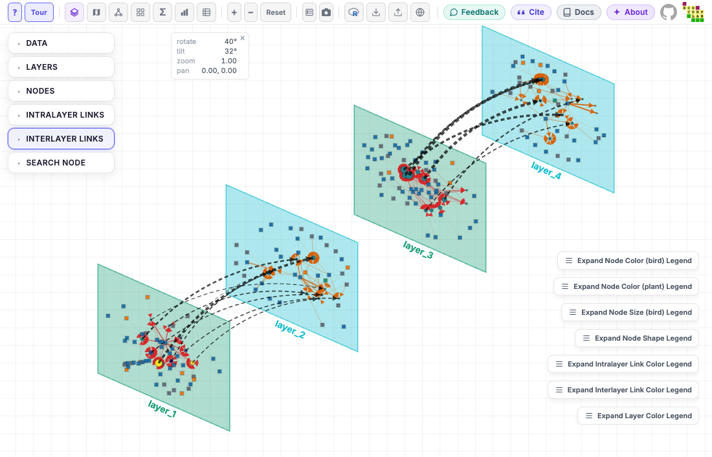
The same attribute, two scale types
# MiRA's default for a numeric attribute with many values: a gradient
mira(net, bipartite = TRUE, setA_type = "bird") +
mira_node(color_by = "intra_degree_sum", color_scale = "continuous")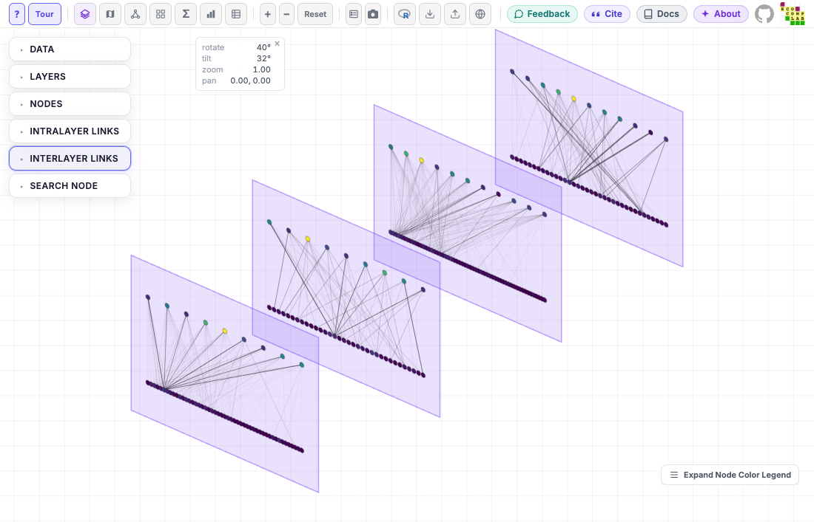
# categorical: one color per degree value
mira(net, bipartite = TRUE, setA_type = "bird") +
mira_node(color_by = "intra_degree_sum", color_scale = "categorical")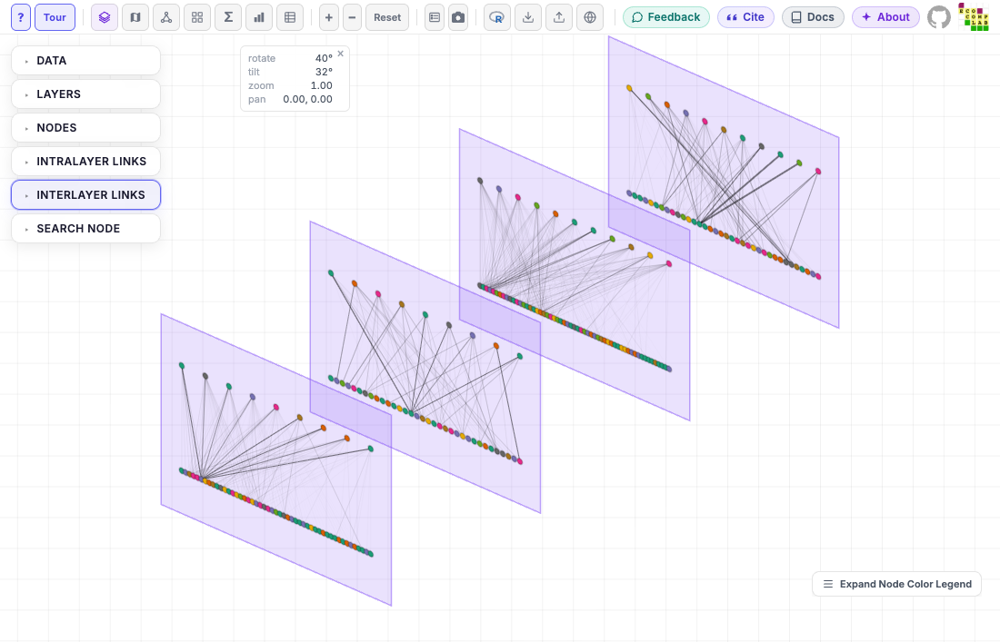
Palettes
A named palette replaces MiRA’s defaults (Dark2 for categories,
viridis for gradients); ?mira_scales lists them.
color_limits fixes the ends of the gradient, so plots of
different networks can share one scale; values outside take the end
colors.
mira(net, bipartite = TRUE, setA_type = "bird") +
mira_layout("bipartite", seed = 42) +
mira_node(color_by = "intra_degree_sum", color_palette = "magma",
color_reverse = TRUE, color_limits = c(0, 30)) +
mira_intralayer(color_by = "type", color_palette = "Okabe-Ito") +
mira_legends(show = c("node_color", "intralayer_color"))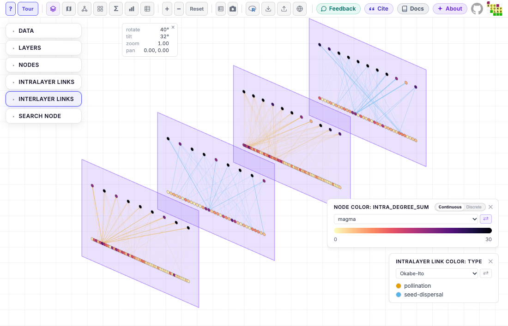
In MiRA, the legend of a scale has the same choices: a palette dropdown and a button that reverses it.
Constant colors
color sets one color for all nodes, links or layers. A
component takes color_by or color, not
both.
mira(net, bipartite = TRUE, setA_type = "bird") +
mira_node(color = "steelblue", shape = "circle") +
mira_intralayer(color = "grey60") +
mira_interlayer(show = TRUE, color = "red") +
mira_layer(color = "#e5e7eb")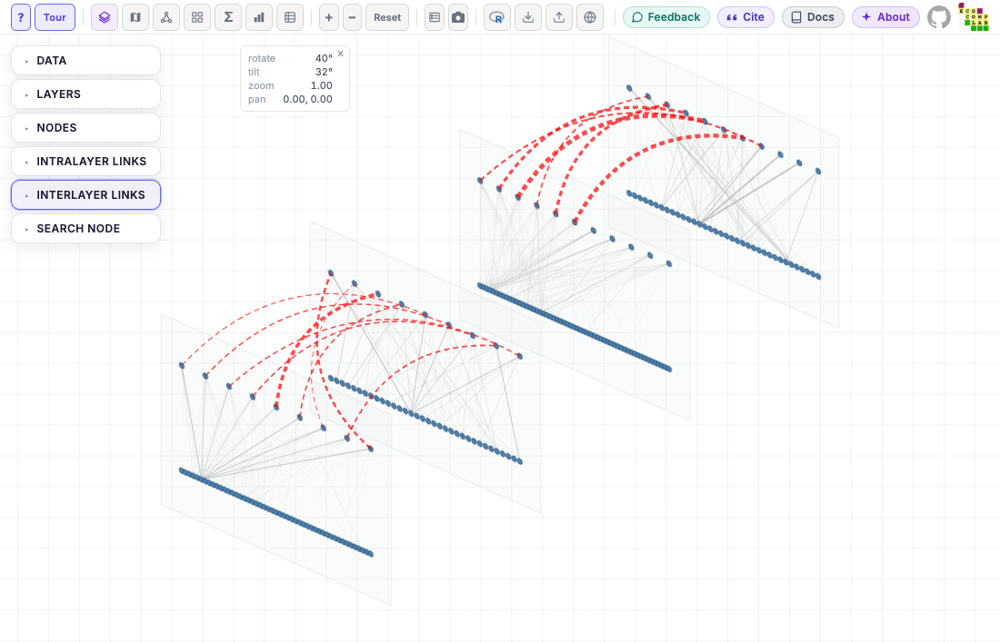
Where the data comes from
MiRA reads the four tables of the multilayer object. To map a new variable, add it as a column to the right one:
| Table | Used by |
|---|---|
net$nodes, net$state_nodes
|
mira_node(color_by, size_by) |
net$extended (links) |
mira_intralayer(color_by),
mira_interlayer(color_by)
|
net$layers |
mira_layer(color_by),
mira_mode_meta(layers)
|
mira_options(net) (step 1) lists the columns each table
offers to each component.
net$extended$log_weight <- log10(net$extended$weight)
mira(net) + mira_intralayer(color_by = "log_weight")Link width and min_weight always use the
weight column, and MiRA does not draw links with weight 0
(R warns how many there are). MiRA does not offer weight,
the coordinates or the columns that identify rows
(node_name, layer_id, …) for mapping, which is
why the example puts the weights in a new column.
A bipartite network needs a column in net$nodes that
says which set each node is in: node_type (or
type, as here). Networks made with
emln::create_multilayer_network() do not have one; add it
before mira(net, bipartite = TRUE).
When something is wrong
When a setting cannot work (a bipartite layout on a network that is not bipartite, a layer name that does not exist), adding the component is an error. When it looks wrong (a column that is not in the network, a value that is not in the column), R warns and MiRA keeps its default for that setting. MiRA checks again when the plot opens, and lists what it could not use in a notice, “Some plot settings from R were ignored”.
Where next
- The reference lists every
component with examples that build a plot step by step:
?mira_node,?mira_layer, … -
?mira_scalesexplains colors and sizes in full;?mira_modethe views. - An example file uses every argument of every component:
file.edit(system.file("examples", "mira_examples.R", package = "ggmira")).